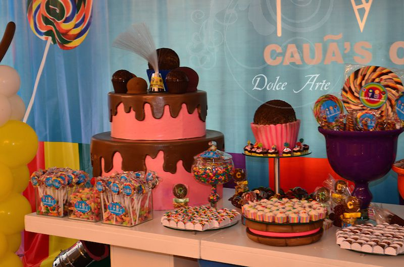
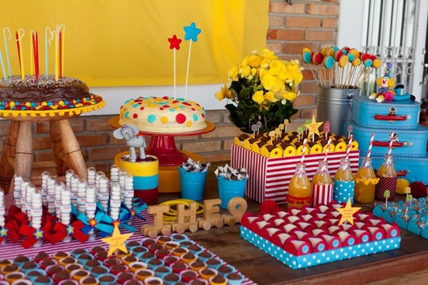
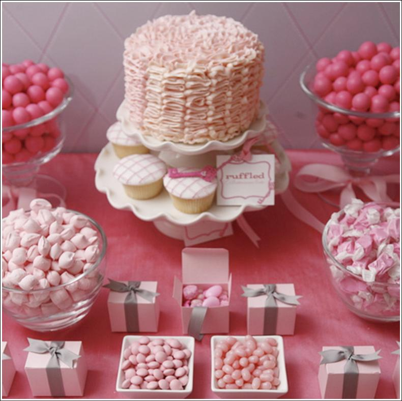
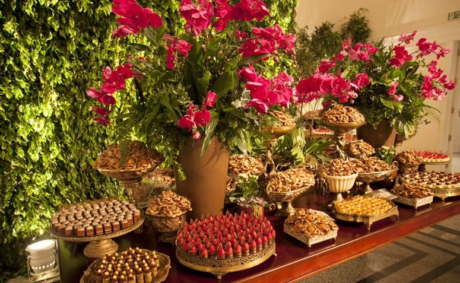
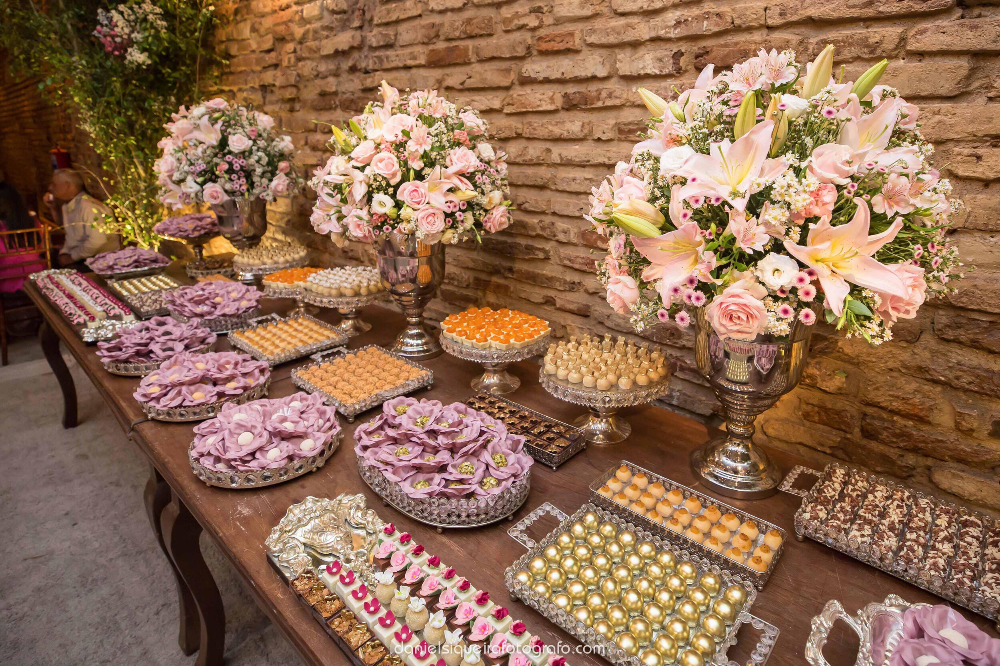
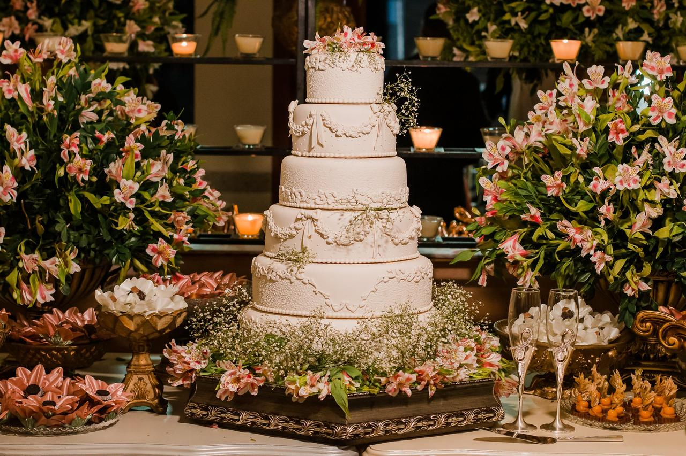
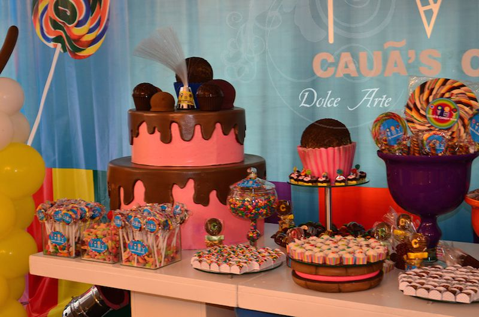
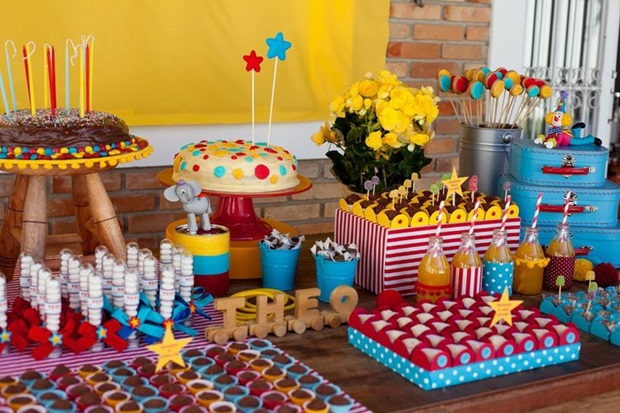
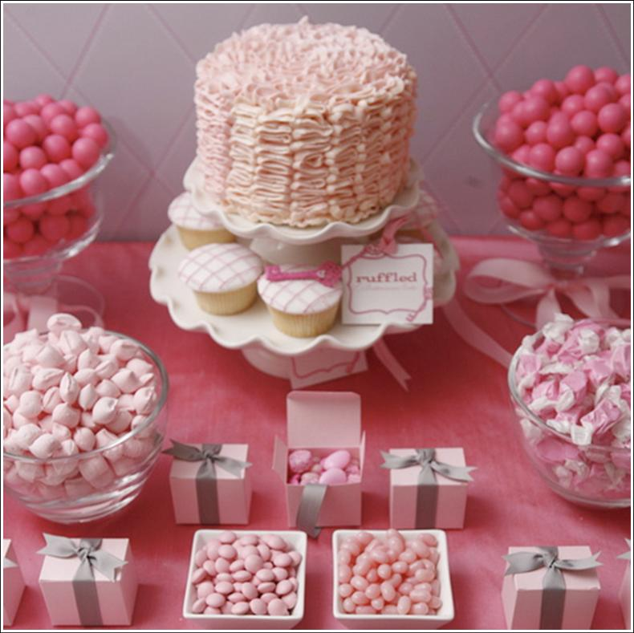
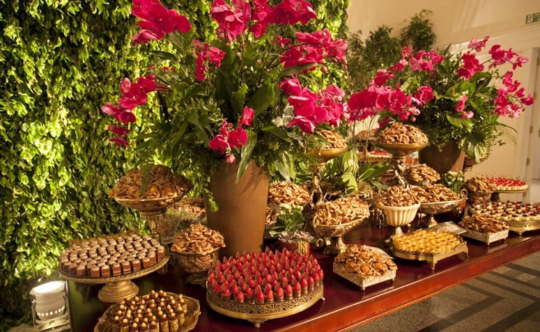
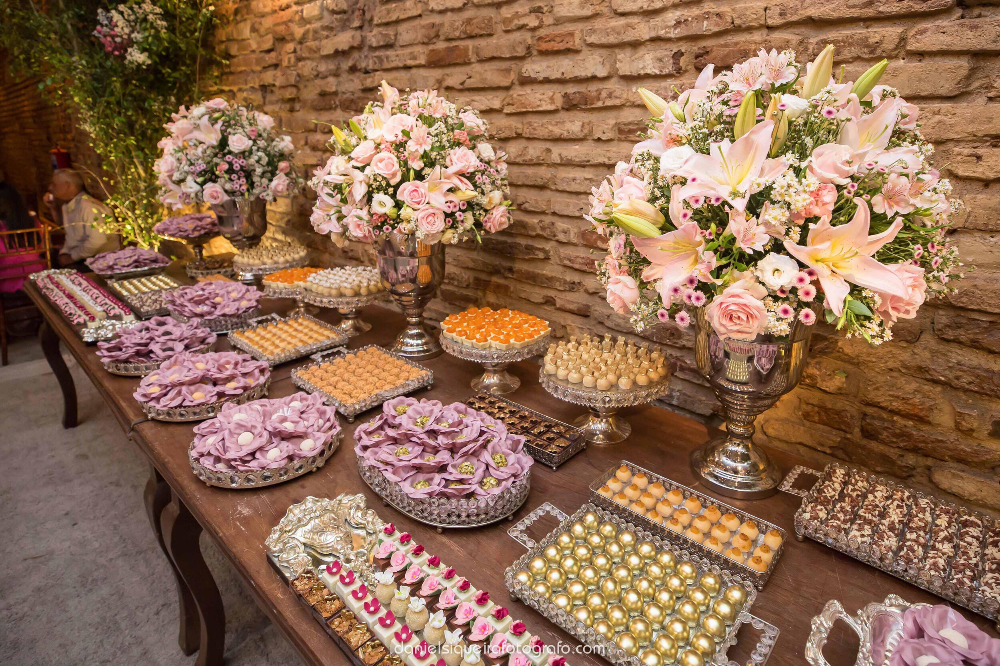
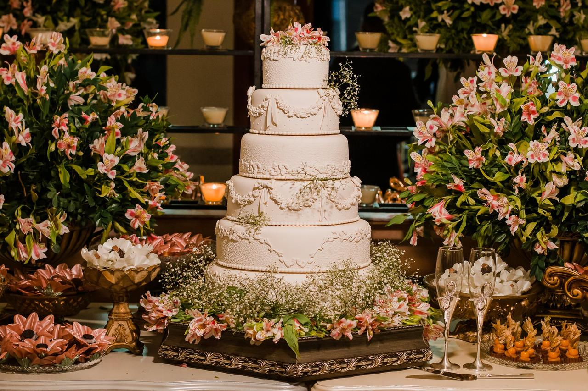
A Alice Doces é uma empresa familiar que atende a região da grande Florianópolis, resultado da união de mãe e filha.
Foi no ano de 2016 que resolvemos unir nossos conhecimentos e experiências, trabalhando juntas na elaboração,
desenvolvimento e produção de doces finos e tradicionais com muita dedicação.
De lá pra cá foram mais de 150 modelos de doces finos criados e centenas de bodas, formaturas, eventos corporativos,
aniversários e, principalmente, casamentos onde estivemos presentes.
A Alice Doces possui uma variedade de serviços, produzimos uma variedade imensa de doces e bolos de acordo com o tema do
evento.
Além da produção de bolos e doces, também decoramos mesas para eventos, fornecendo todos os doces e decorações caso
seja a opção escolhida pelo cliente.
Apresentamos a seguir fotos de alguns eventos realizados pela nossa empresa.
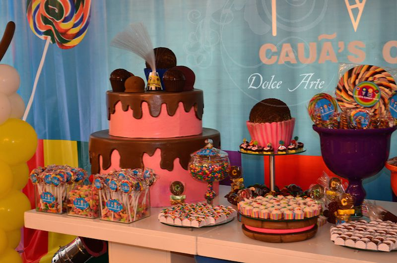
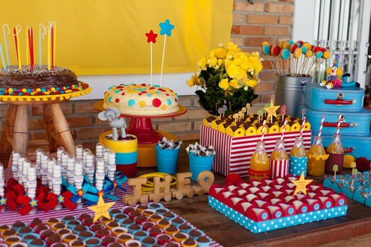
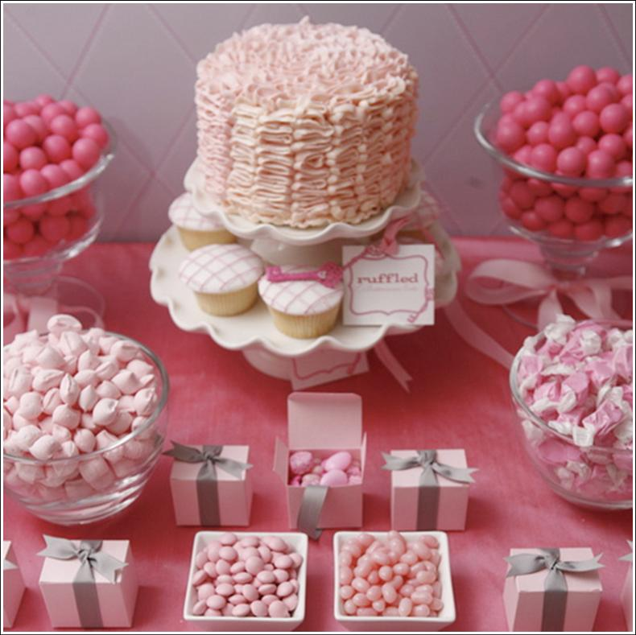
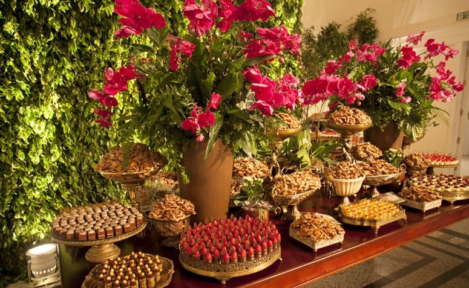
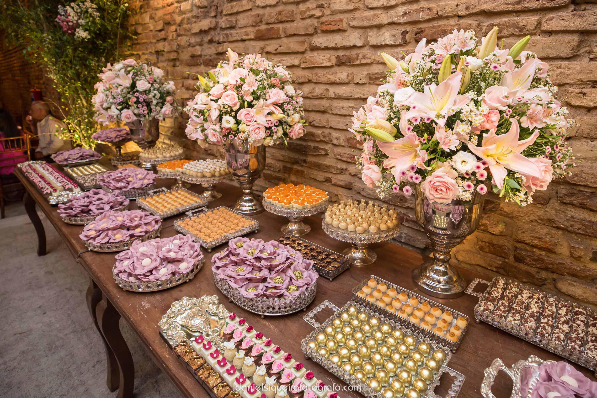
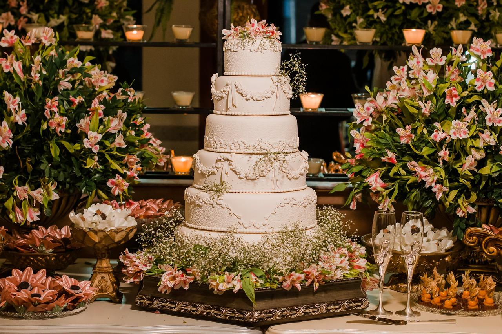